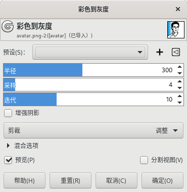
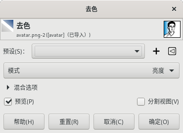

颜色→去色
彩色到灰度

颜色→去色→彩色到灰度
此命令可以把图像从彩色变为灰度效果，但不是变为灰度模式(仍然为RGB模式)，只不过所有的像素点的色值变为R=G=B。
待处理
此命令的说明等待GIMP官方更新。
去色

颜色→去色→去色
此命令可以把活动层上的所有颜色转换为相应的灰度效果。此命令只对活动图层进行操作，图层上的颜色仍然是RGB值，有三个分量，R=G=B，这就成了灰色。
模式
不同的模式其实就是不同的算法：
亮度{Luminance}：新图像的灰色色调使用linearized sRGB来计算。
亮度(Luma)：新图像的灰色色调使用non-linearized sRGB来计算。
亮度(HSL)：新图像的灰色色调被计算为Lightness (HSL)。
平均(HSI 强度)：新图像的灰色色调被计算为平均(HSI 强度)。
明度(HSV)：新图像的灰色色调被计算为明度(HSV)。
单色混合器
请参考颜色→分量⇒单色混合器